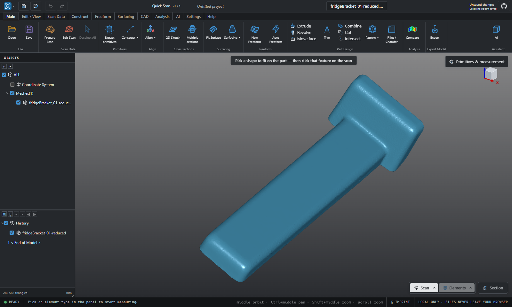
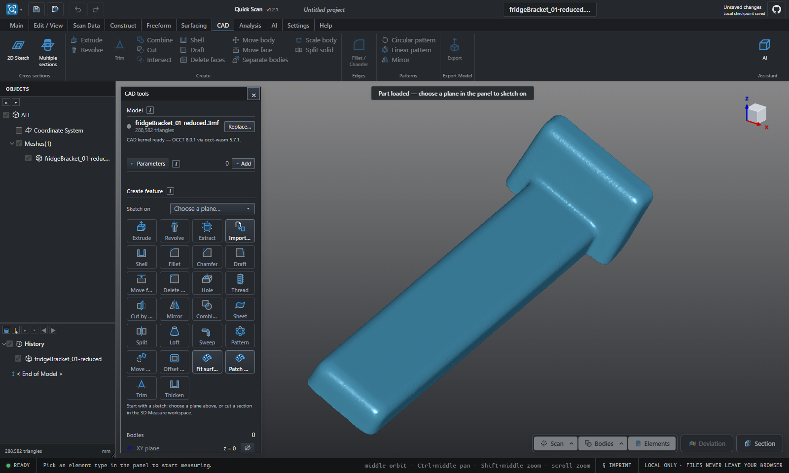

Fit primitives
Click a feature to get a best-fit plane, cylinder, cone, sphere, torus or circle, with its form error.
Free · Open source · Windows
Fit planes, cylinders and spheres to your scan, measure between them, compare against a CAD reference and rebuild the part as a clean STEP model. Quick Scan runs entirely on your PC — your files never leave it.
Windows 10 / 11, 64-bit · No admin rights needed · Verify your download

Features
A ribbon of familiar command tabs over an Objects / History explorer and dockable tool panels that never lose your place.
Click a feature to get a best-fit plane, cylinder, cone, sphere, torus or circle, with its form error.
Auto-align from the scan's own faces, guided datum and symmetry-plane alignment, or move and rotate by numbers.
Distance and angle dimensions with tolerances, GD&T checks, surface area, volume and cross-sections on a 2D sheet.
Colour deviation plots against a reference model, wall-thickness maps and mesh-to-mesh comparison.
Sketch, extrude, revolve, fillet, chamfer, shell, loft, sweep, pattern and more, with a feature history and STEP export.
Draw quad cages over organic shapes, drag and join points, and fit or patch surfaces to the scan.
Prepare, repair, reduce and edit meshes before you measure. Imports STL, OBJ, PLY and 3MF.
An opt-in MCP bridge lets an assistant you connect drive the same session you see on screen. Off unless you enable it.
Workflow

Install
A per-user install needs no administrator rights. Choose shortcuts and the .scanruler file association in the wizard.
Start from the sample scan or open your own. Later versions install from the in-app Check for updates.
FAQ
Yes. It is free software under the GNU AGPL v3. The complete source of every release is on GitHub, and you can build the installer yourself.
No. All processing happens on your computer. The only network calls are the update check against GitHub's releases and, only if you set one up, an AI assistant you connect yourself.
Choose Check for updates in the app. Quick Scan downloads the newest installer from GitHub, verifies its SHA-256 against the release, and installs it when you restart — asking first if you have unsaved work.
Not a drop-in one. Quick Scan is independent and young (1.x). It is useful for real work on the features above, and its known limitations are listed openly. It is not affiliated with any commercial product.
Not yet — Quick Scan ships as a 64-bit Windows app only.
Open an issue on GitHub. Security problems: see the security policy.